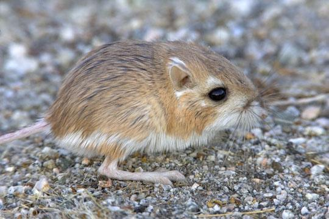
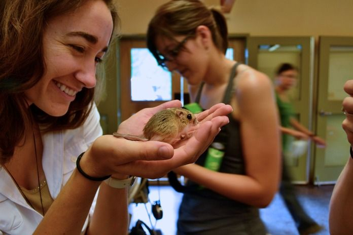

有哪些长得比较逆天的动物？
儿童
青年
老年
动物
生活常识
发布于：2015-03-11
1. 更格卢鼠 (Kangaroo Rat)
......请忽略这蛋疼的音译，但这确实是学名...之一...
虽然人家和袋鼠一样跳着走，但是真的不是小老鼠被大袋鼠强行啪啪啪后生下来的呢！真的真的没有血缘关系！ 虽然我长的很萌，但我本质上来说还是老(hao)鼠(zi)呢，你愿不愿意继续抱我啊？
2. 短尾矮袋鼠 (Quokka) -- 我的自拍我作主！

因胖嘟嘟的腮帮子和永远微笑的脸庞被称为澳大利亚新一代萌神(这脸真的好像被蜜蜂蛰完的狗脸)...
3. 鬃狼 (The Maned Wolf) -- 我有逆天大长腿，你咬我啊？
别看我长的像狐狸，但我真的是狼啊，冠绝犬科的长腿比例才没用美图秀秀拉长过呢！
4. 长颈羚 (The Gerenuk) -- 楼上的你腿有我脖子长吗???
对不起，这逆天的姿势和销魂的肌肉没有吓坏小朋友吧，其实人家只是为了能吃到高处的树叶不得已才练就的绝技呢，谁让地上的食物又脏又难吃呢！(同学你一定是处女座吧...)
草原这么危险，你长的这么逆天还是回火星吧大哥
5. 黑麂 (Tufted Deer) -- 我不喝血，谢谢
你看我这黑色的刘海和黑色眼睛，我明明就是中国的动物你好意思不认识我吗？什么吸血鬼我才没听过，这在我们那疙瘩叫龅牙懂不懂！？
6. 笨蛋章鱼 (Dumbo Octopus) -- 真的让人不知道该从哪里开始吐槽了...
关于作者
彭博
帝国理工学院 (Imperial College London)
点击找到作者动物
根据化石研究，地球上最早出现的动物源于海洋。早期的海洋动物经过漫长的地质时期，逐渐演化出各种分支，丰富了早期的地球生命形态。在人类出现以前，史前动物便已出现，并在各自的活动期得到繁荣发展。后来，它们在不断变换的生存环境下相继灭绝。但是，地球上的动物仍以从低等到高等、从简单到复杂的趋势不断进化并繁衍至今，并有了如今的多样性。